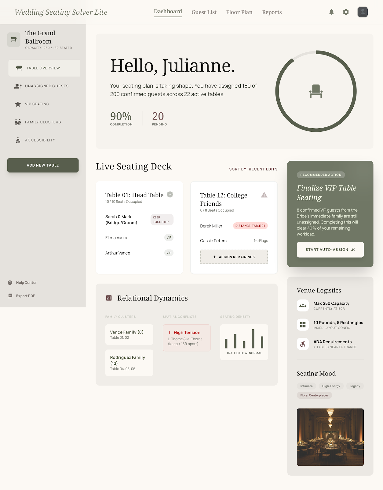

PF SAFE DEMO · 2026-03-09-p003
Wedding Seating Solver Lite
Arrange guests into tables with fewer conflicts and less manual reshuffling before the final seating plan.
ingest status
Imported from Stitch exportOriginal Stitch output is preserved locally while the public PF demo uses a dependency-light safe viewer with the approved screen.
- Source preserved as local artifact
- Public demo path avoids remote CDN dependency
- Preview uses the shipped Stitch screen
